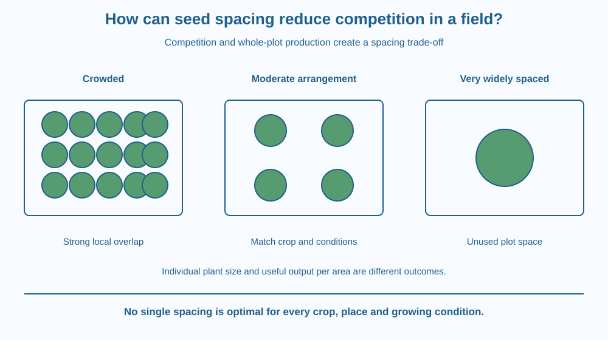

Explain why planting more seeds in the same plot does not guarantee a larger useful harvest. Connect plant density, competition and crop arrangement. Distinguish the performance of one plant from production per unit area, and design a spacing comparison that keeps other conditions as similar as possible.
Two equal garden beds receive the same crop. One contains many crowded seedlings; the other has fewer plants with more room between them. The crowded bed looks greener at first because more stems are visible. Later, some plants remain small or shade their neighbours.
Would planting only a few widely separated plants solve every problem? Not necessarily. Each plant might grow larger while much of the bed remains unused. The design question is how to balance individual access to resources with useful production across the whole area.
Plant density is the number of plants per unit area. Spacing describes how the plants are arranged, including the distances between plants and between rows. Two layouts can have the same density but distribute plants differently.
Plants share access to resources such as light, water, nutrients and growing space. When nearby plants depend on overlapping supplies, competition can limit growth. Crowding does not create extra light or water simply because more seeds were sown.
Leaves can shade neighbouring leaves. Roots can occupy overlapping soil regions. These effects depend on the crop's size, growth stage and environment. A young seedling's needs do not remain identical as it grows into a mature plant.
Very close spacing can also change airflow and humidity within the canopy. Those conditions can influence plant health, although the consequences depend on the crop and the organisms present. The lesson does not promise that every dense planting must develop disease.
Wider spacing can improve access for an individual plant, but fewer plants occupy the plot. This creates a trade-off between yield per plant and yield per unit area. A treatment producing the largest individual plant may not produce the most useful crop from the entire bed.
The useful density depends on the crop and growing conditions. A leafy vegetable harvested young and a large fruiting plant have different requirements. Water supply, fertility, variety and management also affect the outcome. No single spacing is correct for every Indian field or school garden.
Regular rows help growers place seeds, inspect crops and carry out cultivation. Arrangement is therefore not only about biological competition; it also affects access for people and equipment. A layout that prevents tending or harvesting can fail despite looking efficient on paper.
A spacing investigation must separate the intended comparison from other differences. If one bed receives more water or a different seed variety, a growth difference cannot confidently be attributed to spacing alone. Use matched conditions and record limitations rather than turning one observation into a universal recommendation.
Draw identical resource zones around plants in two equal rectangles. In the crowded rectangle, let many zones overlap. In the widely spaced rectangle, leave large unused gaps. The zones are a model of access, not fixed circular territories that real roots obey.
Next label two outcome boxes: size of each plant and total useful output from the plot. Keeping those outcomes separate exposes the trade-off that a simple “bigger is better” rule misses.
Finally compare two layouts with the same number of plants but different clustering. The total density is unchanged, yet local competition can differ. This shows why a count alone does not fully describe spacing.
The SVG shows equal plots with crowded, moderate and very wide arrangements. Schematic canopies overlap more in the crowded plot. A separate pair compares evenly distributed and clustered plants at the same count.
Labels distinguish plant density from arrangement and individual growth from area-based output. The diagram does not show real crop yields or claim that the middle arrangement is numerically optimal for every species.
The shaded circles indicate possible resource overlap, not exact root or light boundaries. The explanation focuses on competition and planting geometry rather than nitrogen conversion, which was covered in an earlier lesson.

Indian farmers choose crop-specific sowing arrangements and may later thin seedlings where appropriate. The decision reflects the crop and conditions, not a general contest to fit the greatest possible number of plants into the smallest space.
A school garden bed must also leave room for watering, observation and safe movement. Plants along an edge may receive different light from those in the centre, so comparisons need to record position rather than assuming every location is equivalent.
Seed packets and local agricultural guidance provide practical spacing information for identified crops. This lesson explains why such advice exists without replacing it with an invented universal number.
Use squared paper and small circles drawn or torn from scrap paper. No planting or long growth period is required.
Explain what the model predicts and what it cannot establish. Paper circles do not measure yield, root spread or disease risk. The activity identifies design questions for a later supervised trial rather than proving one layout best within five minutes.
One treatment produces larger plants, while another produces more total edible material from the same area. Which is better? Explain why the answer depends on the stated goal.
Now consider a trial with more edge plants in one treatment. How could extra access to light create a misleading spacing comparison? Identify what should be recorded before interpreting the result as a biological effect of density alone.
What is plant density?
Answer: B — Plant density counts plants relative to the area they occupy.
Why can crowded plants grow poorly?
Answer: A — Plants can compete when nearby roots and leaves rely on overlapping resources.
A few widely spaced plants are large. What still needs checking?
Answer: C — Large individual size does not establish the greatest output per unit area.
Design a paper trial comparing two spacing arrangements for one identified crop. State the equal plot areas, matched seed source, watering procedure and measurement goal.
Choose whether the main outcome is plant size or useful output per unit area, and justify that choice. Include one limitation concerning position or growth stage. Your design should allow a result other than “more seeds always wins” without claiming that sparse planting must always be superior.
The best individual performer need not belong to the best-performing plot. A plant can benefit from extra space while the area as a whole produces less because too few plants occupy it. Looking at both levels prevents a common mistake in agricultural comparisons and many other systems that share limited resources.
Spacing balances competition and land use; larger individual plants do not automatically mean greater useful production per unit area.